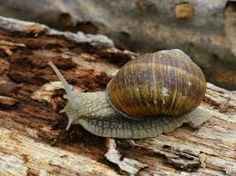
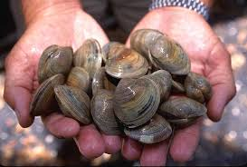
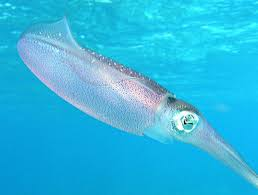

Introduction
Mollusks are soft-bodied animals. Many of them have shells and live in oceans, rivers, and on land.
Types of Mollusks

Snails:
They have spiral shells and move slowly.

Clams:
They have two shells and live in sand.

Squids:
Fast swimmers with tentacles.
 Octopuses:
Octopuses:
Smart animals that can change color.
Body Parts of Mollusks
Most mollusks have a soft body, a shell (not always), a head, and a foot to move.
Fun Facts!
- An octopus has three hearts!
- Some squids can grow bigger than a car!
Conclusion
Mollddusks are amazing creatures. They come in many shapes and help nature in many ways!